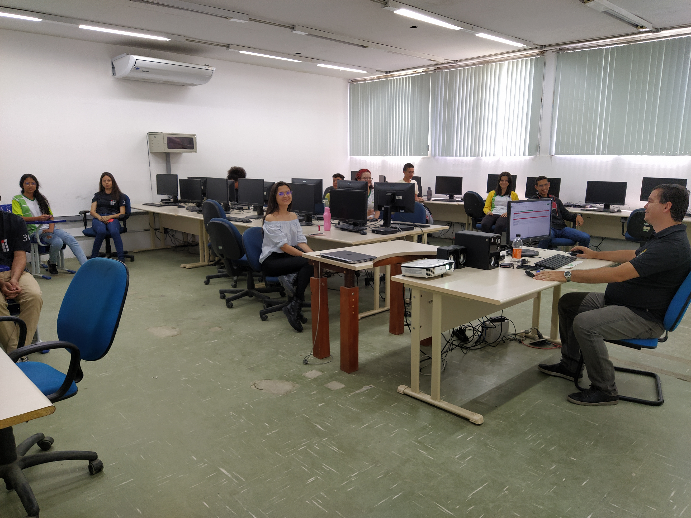

IFPE Campus Belo Jardim
8
Semestres
Integral
Turno
40
Vagas/Ano
Sobre o curso
O Bacharelado em Engenharia de Software do IFPE forma profissionais capazes de projetar, desenvolver e gerenciar sistemas de software complexos. Nossa abordagem combina forte fundamentação teórica com prática intensiva, alinhada às demandas reais da indústria tecnológica e ao desenvolvimento socioeconômico da região.

Cases de sucesso
Trajetórias que mostram o potencial da formação.
Este espaço pode receber depoimentos reais de estudantes, egressos e projetos do curso quando o conteúdo oficial estiver definido.
Desenvolvimento web
Projetos acadêmicos ajudam estudantes a sair da teoria para a prática e construir confiança para desenvolver soluções reais.
Espaço reservado para case realQualidade e produto
A formação mostra que software envolve código, testes, produto, equipe, método e responsabilidade na construção de sistemas.
Espaço reservado para case realInovação e oportunidades
O curso pode abrir caminhos para inovação, estágio, pesquisa, extensão e atuação em diferentes áreas da tecnologia.
Espaço reservado para case realPilares da Formação
Nossa matriz curricular é estruturada sobre eixos fundamentais que garantem uma formação completa, tecnológica e humana.
Formação prática
Laboratórios modernos e projetos integradores desde o primeiro período, conectando teoria e codificação real.
Pensamento computacional
Desenvolvimento de algoritmos, lógica abstrata e resolução estruturada de problemas complexos.
Desenvolvimento de sistemas
Arquitetura, engenharia de requisitos, testes e metodologias ágeis para ciclo de vida completo de software.
Inovação
Criação de soluções digitais com olhar para produto, impacto regional, pesquisa aplicada e transformação social.
Responsabilidade profissional
Ética, acessibilidade, segurança, privacidade e compromisso com soluções úteis para pessoas e instituições.
Visão geral
Engenharia de Software é construir soluções com método.
Mais do que programar, a área envolve compreender problemas, planejar produtos digitais, definir requisitos, projetar arquitetura, implementar, testar, documentar e evoluir sistemas.
Ver PPC e matriz curricular
Aprendizado
O que o estudante vai aprender?
A formação passa por diferentes eixos técnicos e práticos que ajudam a construir uma visão ampla sobre tecnologia e desenvolvimento de software.
Programação e desenvolvimento web
Construção de sistemas, sites, aplicações e interfaces digitais usando lógica, linguagens e boas práticas.
Engenharia de requisitos
Levantamento, análise e organização das necessidades que orientam o desenvolvimento de um software.
Arquitetura e projeto
Planejamento da estrutura técnica de sistemas para favorecer manutenção, escalabilidade e clareza.
Banco de dados
Modelagem, armazenamento, consulta e organização de informações usadas por sistemas digitais.
Testes e qualidade
Verificação de funcionamento, identificação de falhas e melhoria contínua da confiabilidade do software.
Gestão de projetos
Organização de equipes, prazos, entregas, documentação e acompanhamento de projetos tecnológicos.
Perfil do estudante
Para quem o curso é indicado?
O curso é indicado para quem gosta de tecnologia, quer aprender a construir soluções digitais e tem interesse em evoluir com prática, colaboração e organização.
Perfil do egresso
Que profissional o curso busca formar?
O egresso deve ser capaz de atuar de forma técnica, crítica e colaborativa em diferentes etapas do ciclo de vida do software.
Competências técnicas
- Desenvolver e manter sistemas de software.
- Modelar dados, requisitos e soluções.
- Aplicar testes, qualidade e documentação.
- Participar de projetos com organização e método.
Competências humanas
- Trabalhar em equipe com comunicação clara.
- Tomar decisões com responsabilidade ética.
- Aprender continuamente diante de novas tecnologias.
- Propor soluções considerando impacto social.